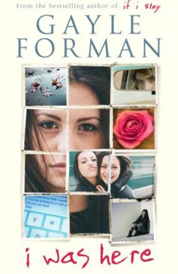
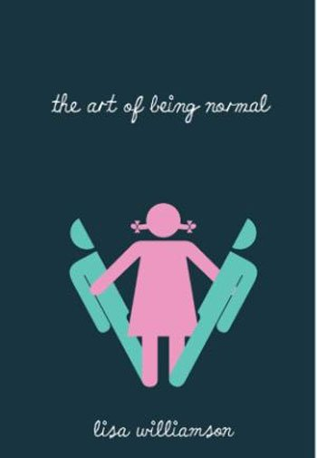
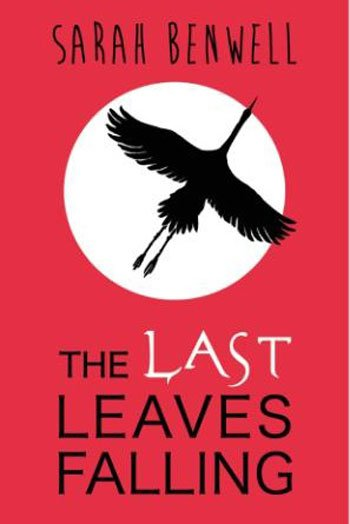
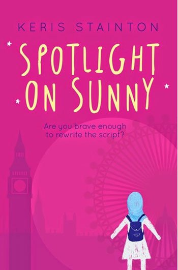
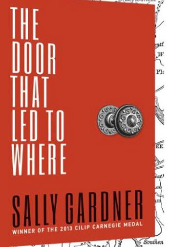
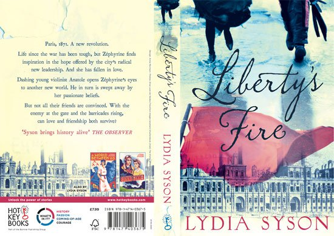
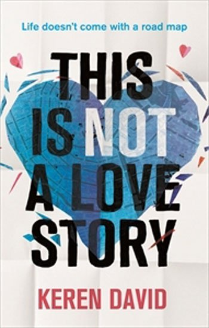
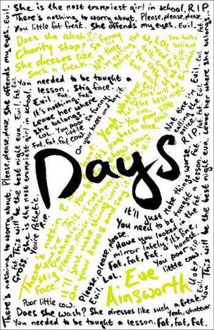

أفضل 10 كتب للمراهقين والمراهقات
مرحلة المراهقة هي من أصعب المراحل التي تمر على الشباب ، لأنهم يكتسبون عادات وتقاليد غير العادات المتعارف عليها ، ويحتاجون إلى من يقف معهم حتى يتمكنوا من اجتياز هذه المرحلة الصعبة ، فجميع الآباء والأمهات يحاولون التقرب لأولادهم بهدف توعيتهم ، فيمكن استغلال الكتب الموجودة في الأسواق ايضا لاجتياز هذه المرحلة ، فالقراءة كما نعلم هي غذاء الروح ويمكنها أن ترسخ عادات وتقاليد هامة في عقول الشباب ، لذلك نقدم أفضل الكتب التي تساعد المراهقين في تعلم قيم جديدة تمكنهم من اجتياز مرحلة المراهقة دون معاناة من الأهل .
i was here ١-كتاب

يعتبر هذا الكتاب من أهم الكتب الخاصة بالمراهقين فهو للكتابة جايل فورمان حيث تناولت فيه قصة حياة فتاة صغيرة تدعى كيز وتلقي الضوء على مدى المعاناة التي عاشت فيها تلك الفتاة بعد مغادرة والدها من المنزل ، والأهم من ذلك عرض القصة حيث استطاعت الكاتبة أن تعرض القصة وتعرض طرق حلها .
the art of being normal ٢-كتاب

يعد هذا الكتاب من أهم الكتب الخاصة بالمراهقين وهو من تأليف ليزا ويليامسون حيث تعرض لحياة ولدين يمتلكان العديد من الأسرار وتدور أحداث كثيرة جدا بين الولدين ، ويتدخل الكثير من الأقران لمنع هذه الصداقة في المدرسة لتتفاقم المشكلات خاصة وأن ديفيد وهو أحد أبطال القصة يريد أن يتحول فتاة
the last leaves falling ٣-كتاب

يمثل هذا الكتاب حياة مراهق صغير عاش في وحدة وعزلة لأنه أصيب بمرض ما فلم يستطع المشي كغيره من الأصدقاء ، لذلك فضل أن يعيش في عزلة وأن يخلق لنفسه عالما جديدا عبر مواقع التواصل الاجتماعي عبر شبكات الإنترنت ، وهذا الكتاب هو للكاتبة سارة بنول .
spotlight on sunny٤-كتاب

وهو أيضا أحد الكتب الهامة جدا والذي يهم كل المراهقين والمراهقات حيث يحكي الكتاب عن كيفية تجعيم العلاقات الأسرية في بريطانيا ، فالكتاب يروي قصة فتاة مع أصحابها تحاول أن تبحث عن المستقبل ، فالكاتبة هنا وهي كريس ستانتون تحاول أن توضح للمراهقين كيفية تكوين نظراتهم للمستقبل .
the door that led to where ٥-كتاب

وهو من أهم الكتب التي تحكي عن حياة المراهقين ، فهو للكاتبة سالي جاردنر حيث تروي حكاية مراهق فشل أن يحصل على الشهادة الثانوية مما يضيع مستقبله التعليمي والعملي ، ولكنه لن يفكر إلا في الحصول على مفتاح لباب قديم يحاول أن يدخل منه إلى الماضي الحقيقي لعام 1830 .
the death house ٦-كتاب
يحكي هذا الكتاب عن حياة مراهق صغير كان يعيش حياته بشكل طبيعي جدا إلى أن تغيرت حياته بالكامل من بعد أن اكتشف مرض بالدم ، مما جعله ينعزل عن العالي ويتغير حالته النفسية ، ولم يفكر سوى بالغوص إلى الماضي والبحث عن الذكريات القديمه له .
end game ٧-كتاب
وهذا الكتاب هو للكاتبة آلان جيبونز حيث يحكي عن حياة مراهق يعيش في حالة فقد الوعي بعد تعرضه لحادث أليم بالسيارة ، مما جعبله يدخل المستشفي ليعيش فغي جو آخر غير حياته التي عرفها ويتذكر الماضي ولن يتذكر الحاضر وللأسف يدخله في صراعات كثيرة جدا خاصة مع تورطه في الكثير من الأسرار والأكاذيب .
library's fire ٨-كتاب

وهو أيضا من أهم الكتب التي تتناول حكايات المراهقين فهو للكاتبة ليديا سيسن حيث تعرض فيه حياة أربعة من المراهقين حاولوا جاهدين البعد عن حياة الفقر للبحث عن الحرية والأمل والمساواة ، هذا الكتاب يتضمن عدة صراعات مختلفة تتم بين هؤلاء الشباب وهو من الكتب ذات الأبعاد السياسية .
this is not alove story ٩-كتاب

هذا الكتاب هو للكاتبة كارين ديفيد حيث يحكي عن حياة مراهقة صغيرة تدعى كيتي كانت تعيش حياة عادية جدا ولكنها تعرضت إلى مأساة من بعد وفاة والدها وتحولت حياتها بالكامل لتعيش حياة مليئة بالأسرار ثم تنتهي بالوقوع في الحب .
seven day ١٠- كتاب

يعتبر هذا الكتاب من أهم كتب المراهقين حيث يروي مجموعة من القصص التي تحيط بالمراهقين في كل مكان بالعالم ، فهذا الكتاب هو للكاتبة إيفا أنسوريت حيث ضمن في كتابة مجموعة من القصص الجريئة والموضوعية التي تحارب بعض العادات المجتمعية الخاطئة من منظورها حتى يتم التغلب عليها .